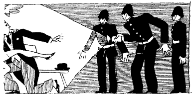
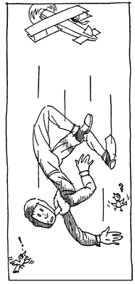

| Vol 7, No. 7 | July 1996 |
CONTENTS
AR Conference is Huge Success
Local Papers Go Nuts
Conference Tapes
Whys and Wherefores of Intelligence
Adventures in the Book Trade
O Tempora, O Mores!
Letters from Readers
COVER STORY
AR Conference is Huge Success
The second American Renaissance conference has been a resounding success. Hysterical media reactions and occasional “civil rights” demonstrations were only a tonic to the 165 people who gathered from all around the country and even from as far away as Germany and Canada.
The conference proceeded without mishap or interruption in Louisville’s most elegant downtown hotel, The Seelbach. Despite tremendous pressure from liberals, the hotel management stood by its contract with AR, and made every possible effort to ensure a smooth and successful meeting.
| Standing: Frank Borzellieri, Jared Taylor, Samual Francis, Philippe Rushton, Sam G. Dickson. Seated: James Thornton, Wayne Lutton, Michael Hart, Michael Levin. |
|---|
After registration on Saturday afternoon, Jared Taylor, editor of AR, welcomed the conferees. He described the media storm that had built up over the past six weeks, and recounted some of the unsuccessful efforts to shut the meeting down. Mr. Taylor warned that there were sure to be demonstrators but expressed confidence in the Seelbach’s security measures. He then introduced George McDaniel, editor of the AR web page, who explained how effective the page has been in spreading the word about AR. The group then enjoyed a very convivial reception, where merry-making and fellowship continued well into the evening.
The first anti-conference demonstration took place during the reception. Some 35 or 40 people, mostly white, gathered on the sidewalk in front of the hotel to chant slogans, wave signs, and give speeches. The demonstrators had called out the local television stations, so several conference speakers joined them in front of the hotel to go on camera and add a note of sanity to the evening news broadcasts. The demonstrators were an excitable lot. One, catching sight of Jared Taylor, shouted into a bullhorn that “racists should be torn limb from limb.”
| Several conference speakers went on camera to add a note of sanity to the evening news broadcasts. |
|---|
The conference began in earnest the next morning. The first speaker, Prof. Michael Levin of City College of New York, spoke about current fallacies regarding race. One of the most popular is the currently fashionable but groundless view that there is no such thing as race. Another is the silly notion that because heredity and environment both influence human behavior, it is impossible to separate the effects of one from the other.
Prof. Levin also addressed what is called the Flynn effect, or the view that the average IQs of all people in Western countries have been steadily rising over the past several decades, due to some unknown environmental effect. This phenomenon, if true, is often used to justify the expectation that environment could be used to raise the IQs of blacks to the level of whites. As Prof. Levin pointed out, even if the Flynn effect is real, the gap between black and white IQs has remained unchanged. This suggests that if anyone were to uncover the cause of the Flynn effect, whites would have to be deliberately deprived of its benefits if racial equalization were to be achieved.
Prof. Levin praised The Bell Curve but said that its authors had taken the unfortunate position that since the race/IQ gap has shown itself to be so difficult to close, it makes no difference whether it is caused by heredity or environment. He pointed out that it is vital that performance gaps be recognized as largely due to heredity, because any environmental explanation will be used by blacks to support demands for compensation. “Application of guilt to whites,” he concluded, “is the engine that keeps everything going.”
Prof. Levin was followed by Wayne Lutton, Associate Editor of The Social Contract, who spoke about the effects of large-scale third-world immigration. He noted that polling data show that increased awareness of immigration produces increased opposition to it, and that people whose own areas receive many immigrants are the most opposed. Many blacks, he explained, are moving back to the South, away from those parts of the country that are being transformed by immigrants. Because research consistently shows that large majorities of Americans oppose further immigration, Congress’ unwillingness to reduce immigration levels is one of the greatest failures of a presumably representative government.
Dr. Lutton also spoke forcefully about the local impact of third-world arrivals. Witchcraft of various kinds, along with its attendant barbarous customs, is now common in certain parts of the country. Likewise, in jurisdictions with large numbers of immigrants, courts are beginning to recognize “cultural defenses” to excuse actions that are crimes in the United States but may be common practice elsewhere. Noting that rarely has a Clinton appointee spoken so truthfully, he quoted INS commissioner Doris Meissner: “We are transforming ourselves.”
Likewise ominous is the trend toward international agreements to ensure “immigrant rights.” It is only white nations that are receiving immigrants in large numbers, and they are beginning to bind themselves under international law in ways that are a direct threat to sovereignty. Dr. Lutton warned of potential treaty agreements that could actually take away from Congress the power to regulate immigration and put it in the hands of international bureaucrats.
Dr. Lutton was followed by Fr. James Thornton, a priest under the jurisdiction of the True Orthodox Church of Greece. Speaking on “A Christian Perspective on the American Dilemma,” Fr. Thornton reminded the audience that Christianity has long been at the heart of European civilization and has inspired many of its most glorious cultural achievements. He denounced what he described as the central elements of modernism: godlessness, which leads to materialism; materialism, which makes money-making the highest objective; and the destruction of hierarchies and local particularisms because they are obstacles to efficient money-making. In his critique of modernism, he explained that in the 19th century Jakob Burckhardt had already spoken out against the “arrogant belief in the moral superiority of the present.”
Despite the current association of Christianity with liberalism and relentless egalitarianism, Fr. Thornton cited many historical examples to show that this is a departure from original Christian teaching. He explained that although men are equal before God, “traditional Christianity is clearly not rooted in a tradition of earthly egalitarianism.” He concluded with a stirring call for a return to the spiritual wellsprings of Western Civilization and for the reestablishment of a moral authority and social order based on faith.
| No multi-racialist. |
|---|
After lunch, Jared Taylor expanded on ideas outlined in the June issue of AR. He noted that whites are not willing to live in areas that have non-white majorities, yet are pursuing policies that will soon give the entire United States a non-white majority. He pointed out that racial diversity is a terrible weakness, not a strength, and that it is unprecedented for a majority race or cultural group voluntarily to give up its own nation.
In seeking to uncover the reasons for this tragic capitulation, Mr. Taylor noted some of the characteristics that make Western Civilization unique: rule of law, democracy, free speech, respect for women’s rights, and even concern for the environment. They are all based on a deeply rooted conviction that all people — even generations not yet born — have rights that must be respected. Mr. Taylor went on to speculate that it is a perversion of this characteristic concern for others that has paralyzed whites in the face of explicitly racial demands issued by others.
In conclusion, he noted that some of America’s greatest men — Thomas Jefferson, James Madison, Andrew Jackson, John Marshall, Abraham Lincoln, and many others — were convinced that a multi-racial society of the kind we are building could not succeed. He warned that we must reject the suicidal fad of multi-racialism and return to the wisdom of our forebears.
The next speaker was syndicated columnist, Samuel Francis, who was greeted with a sustained ovation. He began with an account of the vicious treatment by the establishment of people who dare to question current racial dogma. He described in detail the vilification, attacks on professional integrity, legal battles, and even physical intimidation that have followed Philippe Rushton’s and Michael Levin’s courageous battles against orthodoxy. He pointed out that the opposition never attempts to refute a dissenter’s views, but instead tries to muzzle him and destroy him professionally.
Dr. Francis noted that in the past, elites have tended to be conservative, because it was in their interests to preserve the social order that kept them in power. He suggested that today’s elites have a vested interest in “liberalism” and constant change, because social intervention and the enormous government and media apparatus that goes along with it are their primary power base. He concluded with a warning that unless those who believe in our race and civilization are willing to take risks — risks as great as those taken by civil rights workers in the 1960s and even by homosexual activists today — we cannot hope to advance our interests.
Gordon Baum of the Council of Conservative Citizens then gave a brief account of his organization’s activities. The C of CC is no doubt the most effective group working today for the interests of the majority. Mr. Baum was followed by Frank Borzellieri, who had just stood the city of New York on its ear by winning re-election to the school board on an explicitly Euro-centric ticket. His may have been the greatest margin of victory in the entire history of New York school board elections, proving that voters can withstand hysterical press denunciations and will, when given the chance, vote for Western Civilization. Mr. Borzellieri noted that if victory is possible in the very belly of the multi-cultural beast, it is possible anywhere.
The first evening event was a patriotic sing-along hosted by Sam G. Dickson of Atlanta. With piano accompaniment, and with vocal cords well lubricated with drink, conferees sang their way through such favorites as “The British Grenadiers,” “Columbia, the Gem of the Ocean,” “The Orange Sash,” “Rule Britannia,” and “Land of Hope and Glory.” The most rousing renditions were of the Confederate favorites, “Dixie,” “The Bonnie Blue Flag,” and “Maryland, My Maryland.” The group also sang a number of ancient European national anthems, including “God Save Kaiser Francis” and “God Save the Tsar,” neither of which, Mr. Dickson observed, had probably ever before been sung in Louisville. Cheered and refreshed, the group proceeded to an excellent banquet dinner.
The after-dinner speaker was Philippe Rushton of the University of Western Ontario, who began his talk with a display of some of the editorial cartoons the Canadian press has published in attempts to lampoon his views. In retrospect, and to a sympathetic audience, these mean-spirited attacks seemed quite hilarious. Prof. Rushton noted that when The Bell Curve was published, he benefited from Canadian nationalism, in that even when columnists deplored genetic explanations for the race gap in IQ, they could not help but be proud that a Canadian had been well ahead of Charles Murray and Richard Herrnstein on this question.
| Prof. Rushton spoke for nearly two hours, holding his audience spellbound and showing a complete mastery of his field. |
|---|
Prof. Rushton then went on to give a clear, comprehensive, and convincing survey of racial differences. He explained that the races differ not only in intelligence, but in physiology, behavior, and even personality, and that these differences are found consistently all around the world. He said that at one time he assumed the IQ question would be what finally opened the subject of racial differences to general discussion, but that he has now changed his mind. AIDS is spreading so rapidly among blacks, and the expense of treatment is so high that the terrible cost of public health for blacks will be the issue that finally makes race impossible to ignore.
Including the question-and-answer period, Prof. Rushton spoke for nearly two hours, holding his audience spellbound and showing complete mastery of his field.
The first speaker on Monday morning was the only disappointment. In order to fill a last-minute gap in the program, Jared Taylor had asked a prominent local liberal to listen to the first day’s speakers and then report on where he thought they were mistaken. John Yarmuth, editor of the Louisville Eccentric Observer, described the conferees and speakers as frustrated people incapable of accepting change. He said that it was diversity that has made the United States a great nation, and that despite accusations of hypocrisy from some of the speakers, many liberals lead racially integrated social lives.
He dismissed IQ testing as an arbitrary, irrelevant measure. “He who makes the rules, rules,” he explained, saying that one could set up an equally arbitrary standard of superiority and inferiority by using golf handicaps. People with low handicaps usually live in nice neighborhoods, have intact families, and high incomes; why not argue that all of this is a result of their superior golf game? In a speech that was occasionally insulting, he did make one excellent point: That just as racialists object when people claim they are motivated by hate, so should they refrain from mischaracterizing the motives of liberals, who often hold their views sincerely.
Mr. Yarmuth was followed by Michael Hart, who spoke about racial partition of the United States. He began by pointing out the myriad ways in which the races are incompatible. Prof. Hart proposed a three-way partition, with a black-separatist nation, a white-separatist nation, and a multi-racial, integrated nation. He argued that it would be best to provide for a multi-racial nation because whites and blacks who believe in integration would not want to live with separatists. He said that the size of each separatist nation would be determined by the number of people who committed themselves to living in them. The new nations would be located so as to oblige as few people as possible to move. People who did move would have several years to do so, and government would compensate them for the property they left behind.
Prof. Hart noted that sufficient sentiment for partition is not likely to develop for several more decades, and that for the present his plan might appear fanciful. He warned, however, that peaceful, voluntary separation is the only certain way to avoid the possibility of uncontrolled, violent separation.
The final speaker on the program was Sam G. Dickson. He heaped scorn on liberals, who never seem to notice that their social experiments always fail. He noted the blindness of those who believe that in all of Creation only the human brain is somehow exempt from the laws of genetics. He echoed Michael Levin’s view that guilt for imaginary sins is what demoralizes so many whites. He did, however, point out that whites do have one thing for which they should feel guilty — the invention of liberalism!
Mr. Dickson said that America has three possible futures. The first, which is only a pipe dream, would be a return to the innocent 1950s. The two more realistic possibilities are continued dysgenic decline into ever-greater degeneracy or ascent into a shining world of genetic and cultural progress. “The people who can set our nation on the right course are sitting in this room today,” he said, adding that the fate of our struggle lies in our hands and in our hands alone. Mr. Dickson’s eloquence was a fitting conclusion to an inspiring program.
The final demonstration against AR took place just as the conference was breaking up. A group of about the same number as before performed its evolutions in front of the hotel, as conferees looked on in amusement. The contrast between the high demeanor of the AR group and the scruffy vulgarity of the demonstrators could not have been greater.
The conferees then set off for their homes, inspired by the program, cheered by the camaraderie, and resolved to work harder than ever for a cause they know to be as crucially important as it is just and true.

ARTICLE
Local Papers Go Nuts
There has been much shrieking in the Louisville papers about the AR conference, some of it hilarious. Here is one of the more lurid passages from the Louisville “alternative” paper’s coverage:
“Enter Jared Taylor — square-jawed, ruggedly handsome Aryan. I’d never met him in the flesh before and was instantly disarmed by his smile when he sat beside me and said, ‘So, what do you think of what the speaker had to say?’
‘Fascinating,’ I replied honestly. ‘I’ve taken good, honest notes for my article.’
Jared asked, ‘When will The [Louisville] Courier ever report the truth about all this?’
As an answer I ventured: ‘When it’s too late?’
‘The swine,’ Taylor almost spat out, referring to Louisville’s declining daily.
‘The Schvindhund!’ I corrected.
Our blues locked and we had a little male Aryan bonding on the spot. For all I knew, we had belonged to the Waffen SS together, fighting on the Russian Front. ”
For photocopies of press coverage — there are more than 20 pages, most of it much less entertaining than this — please send $4.00 and a stamped, self-addressed envelope.

|
ARTICLE Conference TapesAudio and video tapes of the 1996 AR conference will be ready soon and tapes of the 1994 conference are still available. Audio tapes are $7.50 each and videos are $30.00 each. Ten audio tapes, in any selection, from either or both conferences are $60.00. All tapes include question and answer sessions, and all prices include postage. Each video runs for two hours. Philippe Rushton’s speech lasted more than an hour and a half, so it is on a tape by itself, but the rest of the tapes contain a pair of speakers each: Michael Levin & Wayne Lutton, Fr. James Thornton & Jared Taylor, Samuel Francis & John Yarmuth, Michael Hart & Sam Dickson. 1996 conference: Prof. Philipe Rushton 1994 conference: Joseph Sobran For broadcast purposes, please enquire about the availability of tapes in S-VHS or BetaCam SP format. Please send checks to: Renaissance Audio-Visual |
BOOK REVIEW
Whys and Wherefores of Intelligence
Latest research findings on intelligence.
The g Factor, Christopher Brand, John Wiley & Sons, 1996, 253 pp.
It was the great British psychologist, Charles Spearman (1863–1945), who first proposed the concept of g, or general intelligence. He saw that intelligence manifests itself in many ways but believed that there was a unitary, underlying ability that accounted for these manifestations. Spearman knew that physicists used the symbol G for the gravitational constant, and since he was searching for a “physics of the soul” he chose g as the symbol for general intelligence.
The existence of g is still a hotly-debated topic in psychology, but Christopher Brand has assembled some of the best evidence yet to show that it is real, can be measured, and is one of the most important determinants of success in life. His book, The g Factor, is not always easy to understand, but it is stuffed with information about the latest findings in intelligence testing.
Unfortunately, the book was abandoned by its publisher immediately after the first reviews, and can now be had only by photocopy (see accompanying story). Another publisher may take on the book, but even if it never reappears many of its ideas are well worth summarizing.
What is g?
Part of the reluctance to accept the concept of g is that, strictly speaking, it is a statistical artifact. Its existence cannot be proven, but it is strongly inferred from different kinds of intelligence testing.
A person who does well on one kind of intelligence test usually does well on other kinds, but different tests yield different scores. The first figure on the next page is a hypothetical representation of the results of six different intelligence tests. Although the figure is in two dimensions, it should be imagined to be in three dimensions, with each line angling out from the common center the way the ribs of a half-open umbrella (with the handle removed) angle out from the center. The longer the line, the higher the score on the test.
The lines all point in somewhat the same direction (to the right, and not to the left) so can all be understood to be indicating a common underlying tendency. By a statistical procedure known as factor analysis, it is possible to calculate what that common tendency is, and to derive a line that is the equivalent of the handle, or central member of the umbrella (see second figure). A test that gave results along that very line would be a true test of the common factor, g, which all the other tests are thought to be measuring in some imperfect way.
In real life, intelligence tests that produce scores that are as close as possible to the common, central tendency are the most accurate and reliable indicators of intelligence. They come the closest to measuring g, and are therefore said to be highly “g-loaded.” No single test has yet been devised that measures g directly, but a combination of g-loaded tests gives a very good indication of intelligence.
Occasionally, a person does well on some IQ tests but not on others, but ordinarily a good score on one predicts good scores on the rest. As Mr. Brand points out, across-the-board high scores on tests that are methodologically quite different from each other refute the commonly-held view that high IQ is the result of some kind of (usually unspecified) practice or training. Presumably, the kind of training that produces good scores on visual/spatial tests would not help on verbal tests, and time spent learning one kind of intelligence would be time taken away from learning the other. If that were the way intelligence is acquired it would be common for people to get high scores on one kind of test and low scores on others. Consistent scores (either high or low) suggest that tests are measuring some common or general ability.
Other Objections
Many people try to argue that there is no such thing as intelligence, or g, because there is no precise definition for it. However, people were able to measure weight long before they understood or could define gravity, and electricity can be measured without fully understanding electrons.
Mr. Brand explains that critics of IQ like to scoff at “mere academic intelligence,” claiming that IQ is an artificial indicator of an otherwise useless ability that the tests happen to measure. However, what the tests measure is exactly what is needed for success in all kinds of practical endeavors, and no one has ever devised a better measure of “real,” non-academic intelligence. Likewise, few people would be willing to give up 20 or 30 points of “mere test-taking ability” and be completely confident that nothing else in their lives would change.
Mr. Brand notes that many people have speculated that persistence or determination is what brings success in life as well as high IQ scores. In fact, it is easy to devise tests of persistence that involve repetitive movement or memorization of nonsense syllables. These require application but little intelligence, and high-IQ people do no better on them than anyone else. Likewise, in order to test the motivation hypothesis, researchers have offered subjects money if they do well on IQ tests, but the added incentive does not improve scores.
It is, of course, intelligent people who are most likely to mount sophisticated arguments about the unreality or irrelevance of intelligence. Mr. Brand suggests why this might be so. One reason is that most people choose friends and acquaintances who are similar to themselves in intelligence. Most smart people therefore associate only with people who are in a tiny segment of the full range of intelligence, and they begin to believe that everyone is like them and their friends.
Another reason is that personality differences and intellectual specialization become much more pronounced among people of high intelligence. It appears that genes govern the most basic aspects of intelligence but that after a certain relatively high threshold of intelligence, environment and individual choice lead people in a great variety of directions. For this reason it is easy for intellectuals to lose sight of the fact that it is probably only the presence of high levels of general intelligence that permit what appear to be strikingly different kinds of intellectual achievement.
The Doctrine of Environment
Of course, it remains dogma among egalitarians that differences in environment explain differences in achievement. Mr. Brand offers some interesting opposition to this view. It is often argued that blacks, for example, do poorly in life and on IQ tests because of some kind of environmental deprivation due to race.
An interesting parallel can be drawn between blacks and deaf people. Mr. Brand reports that, not surprisingly, deaf children get low scores on verbal intelligence tests. However, they get normal scores on non-verbal tests and by the time they are adults they have overcome most of the verbal deficit. Is it really more of a challenge — in ways that would retard intellectual development — to be black than to be deaf? Likewise, children with catastrophic motor disabilities, who lead lives that are severely restricted by any definition, apparently have higher tested intelligence levels than blacks who are not physically handicapped.
Perhaps the greatest direct assault on the environmentalist view comes from biology and physiology. As early as the 1960s, it was discovered that many mental illnesses are best treated with drugs. This instantly invalidated convoluted psychoanalytic theories about the central role of childhood experiences and other social variables — and cast doubt on environmental explanations for IQ differences.
“Inspection time” studies, which are Mr. Brand’s specialty, are an even more direct refutation of environmental claims. The classic experimental method involves use of a tachistoscope, which casts simple images on a screen for very brief periods that can be precisely timed. A common test would be to show two lines of different lengths and have the subject say which is longer. Images can be displayed so briefly that no one can make them out, but a firm pattern has been found, in which more intelligent people are better able to make out the images displayed for the shortest periods of time. Very high correlations of 0.65 and 0.7 have been found between intelligence and “inspection speed.”
Mr. Brand proposes that the tachistoscope measures a basic physiological correlate of intelligence: the speed at which a person acquires and decodes information. It is difficult to imagine a social or environmental explanation for differences in inspection time or for the strong correlation with intelligence. These results cannot be dismissed as some artificial measure of “what IQ tests test.” Unfortunately, Mr. Brand does not report data for different racial groups, but if inspection speed were strongly correlated with intelligence in one race but not in another, it would suggest racial differences in physiology far beyond the expectations of hereditarians.
Role of Environment
None of this is to say that environment has no effect on intelligence. Like many contemporary researchers, Mr. Brand estimates the heritability of individual differences in intelligence to be about 75 percent. Environment clearly has the strongest effect during the early years, when children have the least influence over their environments. In adolescence and adulthood, as their own genes increasingly govern their choices of environments, people more closely reflect more purely genetic propensities.
This is clear from adoption studies. The IQs of adopted children have a reported 0.13 correlation with IQs of adoptive mothers but a correlation twice as great with biological mothers. By mid adolescence, the correlation with the adoptive mother has dropped close to zero while the correlation with the biological mother has increased slightly. Likewise, fraternal twins have more similar IQs when they are children — when their environments are established by their parents — than when they grow older and make their own choices. Identical twins, however, maintain their marked similarity of IQs throughout life, presumably because their identical genes push them to seek very similar environments even as adults.
| Genes or environment? |
|---|
In fact, as Mr. Brand points out, even small children establish their own environments to some degree. A bright, sunny child elicits different reactions from parents and strangers than does an ill-tempered one. Thus, even some of the effects on personality and intelligence that count as environmental are, to some degree, influenced by genes. As children grow older the parental environment increasingly becomes a reaction to the child’s genotype rather than an independent, external force.
Why is there so much resistance to genetic explanations for human difference, despite increasingly irrefutable evidence for it? One reason is a quasi-Marxist longing for human equality, what appears to be a genuine revulsion for the brute fact of unbridgeable gaps. Another seems to be a fear that genetic explanations would lead inevitably to forcible, eugenic measures.
The curious thing is that environmental explanations still leave what amount to unbridgeable gaps in achievement. Nor do they dispel the bogey of forcible government intervention that eugenicists, we are always warned, secretly desire. Massive transfers of wealth and decades of government intrusion have already failed to equalize achievement or even begin to narrow the black/white IQ gap. Even if the environmentalists were right, it would take unimaginable tyranny to equalize what even Communism failed to equalize. Mr. Brand argues that much of the opposition to genetics comes from people who make a living in the uplift trade and who would be exposed as useless if the truth were known.
The social engineers are not even self-consistent. As The g Factor notes, if parental environment counts for so much, liberals should be in the business of controlling procreation just as ruthlessly as they think eugenicists would. If environment accounts for everything, why do liberals not forbid all baby-making and child-rearing in housing projects?
Although Mr. Brand does not call for eugenics, the facts he assembles leave little doubt where his sympathies lie. He thinks it a disgrace that psychology has neglected and downplayed the reality and heritability of intelligence, and even accuses much of the profession of outright malpractice.
In The g Factor Mr. Brand proposes only one policy change that should logically follow acceptance of the reality of g: “streaming” or grouping of students by ability. He argues that squeamishness over inherent differences in ability fuels the current fashion for shoving everyone into the same classes, but this makes everyone suffer. Dim students hold the good ones back and good ones outstrip and humiliate the dim ones. Mr. Brand writes that there are perhaps a few talented teachers who can pitch the same lesson simultaneously to children of different abilities, but most cannot. Nor, he argues, is there any basis in the fear that bright children may not be “mature” enough to skip grades. Gifted children are happiest with friends of the same mental age, not chronological age.
All in all, this is an excellent little handbook on the current state of IQ research. It makes no claims the data do not support, and touches only briefly on the race-IQ question. Nowhere does it go beyond the generally accepted boundaries of psychometry. The braying in the British press and John Wiley’s astonishing capitulation (see next story) only show how rare good sense still is.

SPECIAL REPORT
Adventures in the Book Trade
The academic publishing house, John Wiley & Sons, has distinguished itself by taking what must be one of the most craven decisions ever made by a publisher. It has withdrawn from the trade and described as “repellent” a study of intelligence that just the previous week it had been calling a “well argued, critical review” by a man “well known for his contributions to research and debate on intelligence.” Needless to say, it was the book’s straightforward treatment of the black/white IQ gap and resultant hysteria in the press that prompted Wiley’s contemptible about-face.
The book in question is The g Factor, released in February in the United Kingdom and originally scheduled to appear in the United States in the spring. The author is Christopher Brand, a lecturer in psychology at the University of Edinburgh. Wiley pitched the book in Britain as a semi-scholarly study of intelligence: “The g Factor introduces and reviews twentieth-century arguments about intelligence while focusing on recent advances in methods and research … [Offering] a focused review that is succinct, authoritative and up-to-the-minute, this book will be of interest to the general reader, as well as undergraduate students of psychology, education and social sciences.”
Like any sensible study, The g Factor concludes that intelligence is largely heritable and that the black/white performance gap is probably at least partially genetic in origin. Like any sensible publisher, Wiley tried to get press attention for the book by soliciting interviews with the author. They got a huge amount of press but not, apparently, the kind they wanted.
For two straight weeks, Mr. Brand was on the cover of major British papers, while the chattering classes attempted to digest his views. What seems to have most shocked the properly socialized was Mr. Brand’s acceptance of the label “scientific racist,” in which he saw nothing invidious since liberals have consistently called even the most eminent IQ researchers “racists.” Almost as reprehensible was his suggestion that if unwed underclass girls insisted on going drinking and having sex, they should at least give their resulting illegitimate children a better start in life by choosing high-IQ men as sex partners. Oh dear.
 |
Just one day’s front-page headlines included the following: “‘Scientific racist’ denies controversy,” “Scientific racist sparks row,” “Race: New book on IQ claims black people are less intelligent,” “Fury at race IQ claims,” “Race storm over book,” and “Blacks have lower intelligence, claims Scottish academic.”
Wiley suddenly detected much that was loathsome in the book it had been promoting, and on April 17th issued the following press release:
“After careful consideration of the statements made recently by author Christopher Brand (as reported in the British press), as well as some of the views presented in his work, The g Factor, we have decided to withdraw the book from publication. The management of John Wiley & Sons, Inc., does not want to support these views by disseminating them or to be associated with a book that makes assertions that we find repellent.”
The publisher then took the extraordinary step of “depublishing” the book; it stopped distributing it, withdrew copies from book stores, and canceled a planned release in the United States. Lest American readers think this was a particularly British act of poltroonery, it was the American branch of the company that made the decision. Wiley U.K., though, was already showing signs of the collywobbles by mid-March and appears to have been delighted to follow orders.
Naturally, a blizzard of “refutations” of Mr. Brand appeared in the U.K. papers. One of the more astonishing was produced for the May 5 Observer by one Graham Richards, “visiting principal lecturer in psychology at Staffordshire University.” He wrote that the race/IQ question is “largely meaningless” because “‘race’ is a social, not a biological category,” and concluded that it has been known since 1930 that low black IQ scores are due to an “undiagnosed visual impairment.”
Meanwhile, at the University of Edinburgh students and faculty were screaming for Mr. Brand’s scalp. There was so much potentially violent sentiment that the police assigned him special protection. A month’s investigation into whether there might be reason to fire him came up empty-handed. Representatives of the student government eventually began to realize they looked foolish calling for Mr. Brand’s sacking on account of a book they had not read and could not read, so they decided to demand only that he be barred from teaching. The university duly began an investigation of his “teaching style,” and concluded, without being very specific, that it should be changed.
Through it all, Mr. Brand stuck to his guns, giving interviews, appearing on talk shows, and seeming to revel in combat. Belatedly support began to trickle in. There were the usual private congratulations from people who, themselves, never say in public what they actually believe, and a student group even put on a pro-free speech demonstration. Academics are beginning to line up in support not just of Mr. Brand’s right to speak but of what he is saying.
On May 20, the National Association of Scholars, an American organization that battles the excesses of university liberalism, issued a statement urging Wiley to “proceed with its original commitment to publish” and warning that withdrawal of a book “chills the intellectual climate, and encourages efforts to suppress opinions of every stripe.”
Mr. Brand is considering legal action against Wiley, and there have been indications that other publishers are interested in the book. In the meantime, The g Factor continues to be unavailable except in a photocopied edition (the truly committed can get one by sending $75.00 to Stuart Whiteside, 71 South Clerk Street, Edinburgh, EH8 9PP U.K.). Mr. Brand also has a web page, which summarizes the book and reports the latest developments in this sorry story (http://www.cybersurf.co.uk/johnny/chris).
Mr. Brand is doing exactly the right thing. He is not giving an inch and is broadcasting the facts as widely as possible. In cases like this, it is crucial to stand up to the yahoos. Retraction is death. The cringing and the penitent are held up to public humiliation and then cast into outer darkness. The stalwart can not only face down the full fury of the media; the longer they stand firm and the harder they fight, the more support they gain. We hope to report presently that The g Factor has been taken on by another publisher, which plans to distribute it in the United States.

IN THE NEWS
O Tempora, O Mores!
Victims All
Col. Frank Scotti, a 52-year-old white man, is an ROTC instructor at Roosevelt High School in the District of Columbia. On Jan. 30, he heard a commotion in the hall outside his classroom. When he went to investigate, he smelled marijuana and told three blacks who were not even students — one was 20 years old and the others were 19 — to stop smoking and go away. A short time later, they attacked him, beating him bloody and unconscious, while a group of students laughed and cheered. Col. Scotti suffered a broken eye socket, a concussion, and permanent sensory loss in his face. The three blacks were convicted of aggravated assault.
At a recent sentencing hearing, D.C. Superior Court Judge Harriet Taylor could have sent the three criminals to jail for 10 years. Instead, she sentenced them to five years each in Youth Rehabilitation Center, and suspended all but 16 months of the sentence for two of the criminals and all but 24 months for the third. Judge Taylor [race unspecified] remarked that the three defendants “need a great deal of help,” adding, “there are more victims than Colonel Scotti in this case.” (Amy Korval, Judge Decides Against Regular Jail for Attackers, Washington Times, May 25, 1996, p. A1.)
Dispatches From the Front
In May, a black Dayton man shot and killed a white delivery man in an unprovoked attack and then opened fire on a group of white policemen, killing one officer before he was shot and killed. Twenty-four-year-old Maurice Fareed had long had a grudge against whites. As his mother explained to reporters, “The last couple of days he said there wasn’t no hope and white people were going to keep black people in slavery.” (Reuter, Dayton, Ohio, May 24, 1996.)
In April, another black, Michael Whitener, was sentenced to concurrent 60 and 45 year sentences in Goshen, Indiana for killing one white and attempting to kill another. Mr. Whitener admitted that he had simply killed the first whites who came along. He was angry because earlier that day a white detective in Elkhart, Indiana had shot and killed a black man. (105 Years Imposed in Murder, The Elkhart Truth (Indiana), April 18, 1996.)
In Sacramento, California, two blacks have pleaded guilty to kidnapping a white woman from an apartment complex, terrorizing her, and forcing her to drive them around town while they looked for people to rob. The men said they had put the woman through the eight-hour ordeal as revenge for 400 years of slavery. (Roland Sweet, News Quirks, Northern Express (Traverse City, MI), May 1, 1996, p. 26.)
African Law-making
The West African nation of Benin has recognized voodoo as an official religion along with Christianity and Islam. In the past, Marxist leaders tried to suppress voodoo, but contemporary reports indicate that 60 percent of the population are believers. President Nicephoro Soglo has acknowledged the “injustice” of the old Marxist government and declared a paid national holiday for voodoo observances. (Voodoo Reborn as an Official Religion in Benin, Chicago Tribune, Jan. 11, 1996.)
|  |
The Ivory Coast has proposed a law that would give a man the right to divorce his wife for adultery should he catch her so much as having an intimate conversation with another man. For a woman to get a divorce for adultery, she must catch her husband having sex in their house with the same woman at least twice. (Howard W. French, For Ivory Coast Women New Battle For Equality, New York Times, April 6, 1996.)
That Old Black Magic
In April, the son of Joshua Nkomo, vice president of Zimbabwe, died of AIDS. In his funeral address, Mr. Nkomo said that AIDS had been brought to his country by whites in order to depopulate it. He added that whites know the cure for AIDS but refuse to share it with blacks. (Reuter, Nkomo Accuses Whites of Bringing AIDS to Zimbabwe, April 6, 1996.)
In South Africa, the government recently released a report on witchcraft, which finds that the practice is gaining adherents and is moving from the country into the cities. The report focused on the use of human ingredients in potions. In order to work, parts must be taken from live victims; the louder they scream the more potent the magic. Potions containing pieces of people are thought to cure disease, increase crop yields, and ensure misfortune for one’s enemies. A human head may be embedded in a building’s foundation to guarantee success in business.
The report, published by the Commission of Inquiry into Witchcraft Violence and Ritual Murders, warns that whites are increasingly likely to be killed for parts. Many blacks think that whites have special powers that account for their wealth, and believe that whites therefore provide the most potent human ingredients. (Inigo Gilmore, Human Parts Sold In South African Witchcraft Killings, Times (London), May 4, 1996.)
Justice in Chicago
Judges for the Cook County Circuit in Illinois used to be elected at large, but this did not produce enough non-white judges. Recently the system was changed to allow voting by district, which has increased the number of non-whites but has also produced some very inexperienced candidates — one had been a lawyer for less than two years. With the support of the Chicago Bar Association, the City Council Finance Committee has proposed a resolution requiring that candidates have at least 10 years experience. Black Alderman Robert Shaw denounced the measure as “back door” racism intended to limit the number of black judges. He also described the Chicago Bar Association as “nothing more than the Ku Klux Klan.” (Jacquelyn Heard, Council Panel Backs Prerequisite for Judges, Chicago Tribune, April 13, 1996, p. 5.)
In 1992, one largely black district voted in a black woman named Llwellyn Greene-Thapedi who has not been a model of probity. She has been sued 18 times in the past 16 years, four times since her election to the bench. Plaintiffs include General Motors Acceptance Corp, which had to repossess her car for non-payment; First National Bank of Chicago, which accuses her of cashing in the same $6,600 certificate of deposit twice; a linen supply company that says she bounced a $347 check; and the board of her cooperative apartment, which says she owes thousands of dollars on monthly payments.
Lawyers do not like to argue cases before her. After she made a ruling with which he disagreed, one attorney persistently tried to state his objection for the record. Judge Greene-Thapedi had a bailiff handcuff him to a bench outside her courtroom for an hour and a half. Three law firms stopped trying cases before her, saying she was unfair. One firm appealed to her presiding judge, who gave them permission to remove all cases from her jurisdiction — a virtually unprecedented expression of non-confidence. Through it all, Judge Greene-Thapedi appears to enjoy unflagging support in the black community. (Abdon Pallasch, Thapedi Gets Her day(s) in Court: as a Judge, Defendant and Plaintiff, Chicago Lawyer, June, 1996, p. 4.)
In the meantime, Chicago courts are having a hard time getting blacks to serve on juries. Some defense lawyers have even begun to appeal convictions of black defendants on the grounds that there were no blacks on the jury. A recent study by the U.S. District Court of Northern Illinois study shows that slackers are a big part of the problem: 40.1 percent of blacks fail to respond to jury summonses, while the figure for whites is 7.9 percent. (Mary Mitchell, Blacks Less Likely to Show Up for Juries, Chicago Sun-Times, May 28, 1996.)
Out of the Blue
|  |
Donnie Cochran is the first black man to fly with the Navy’s Blue Angels flying team. Until May, when he resigned from the team, he was also the commander of the unit. There was apparently no pressure on him to step down, and he resigned with considerable dignity, citing concern about his own flying mistakes and the threat they could pose to safety. During a recent show at Virginia Beach, the team had to scuttle a maneuver because Mr. Cochran made an error. A spokesman for the Blue Angels explained that the commander made “what aviators refer to as head mistakes.” The real question, which remains unasked, is why Mr. Cochran was put into this position. (Basil Talbott, Jolt for Blue Angels, Chicago Sun-Times, May 29, 1996.)
Citizen Patrols
A private group called U.S. Citizens Patrol, has been barred from looking for illegal immigrants in San Diego airport. Its members did not speak to suspected illegals; they simply asked airline employees to check the identification of all passengers as required by law. No one complained of harassment, and the FBI found no violation of law. But when Hispanic groups started whooping about the patrols, a county judge ordered them out of the airport. (San Diego Judge Bars Group From Anti-Immigration Patrols, New York Times, May 26, 1996, p. 16.)
Difference of Opinion
Rwanda is the small, central African nation where tribal massacres took the lives of an estimated half million people in 1994. In April, the last of several thousand U.N. peace-keeping troops withdrew from the now-calmer country, and offered to leave behind $8.5 million worth of vehicles, computers, tents, and prefabricated houses. The Rwandan government said no. “The U.N. wants to leave us junk worth zero and we are going to refuse,” explained a spokesman. The Rwandans are angry that the U.N. did not prevent the massacres and that a special U.N. tribunal has indicted only 11 ringleaders of the killing. “Those people [the U.N.] came here to steal, and you can quote me on that,” says a political advisor to the Defense Minister. The U.N. mission estimates it put more than $100 million into the Rwandan economy in the 18 months ending in April of this year. (Rwanda Spurns U.N. Donation of Used Goods, Washington Times, April 18, 1996, p. A12.)
Rewriting History
In 1951, during the Korean War, the Army disbanded its last black combat regiment when many of the 24th Infantry’s 3,600 soldiers reportedly deserted their posts. According to the official regimental history, published in 1961, many men defied orders to stand and fight, deliberately wounded themselves to avoid combat, or abandoned rifles and other equipment so they could run faster. This account has angered black veterans and prompted calls for a new, revised history.
After nine years of preparation, a more sensitive history is ready for release, but critics are still so upset they are threatening a defamation suit. They object to passages like: “The 24th’s record in Korea reveals an undue number of military failures, particularly during the early months of the war.” “Some units became so accustomed to withdrawals that their men began to abandon their positions at only the sound of firing …” The fact that all this is now blamed on white “racial prejudice and the poor leadership it engendered” does not satisfy the partisans, who claim the 24th performed as well as any other U.S. regiment.
One 73-year-old black veteran does not dispute official accounts. He says that when “racist” white officers gave orders, “you just didn’t go all out. You would minimize your effort and do more hiding than you did charging.” (Philip Sheldon, Veterans of Black Unit Threaten Suit Over Army’s Account of Their Service, New York Times, May 7, 1996, p. A16. Suzanne Siegel, History Proves Color-Blind, Detroit Free Press, May 28, 1996, p. 1A. Art Pine, Army Revises History of Black Troops, San Francisco Chronicle, April 29, 1996, p. A2.)
Non Compos Mentis
The idea that psychiatric patients should be treated by race is growing in popularity. According to some studies, fully half of all counselling programs now require students to take classes in multicultural therapy. Some people argue that only minorities have enough sensitivity to counsel each other, since whites are, by nature, racist and insensitive to minorities.
One textbook, Counselling the Culturally Different, notes that “without a strong antiracism training component, trainees (especially Whites) will continue to deny responsibility for the racist system that oppresses their minority clients.” The same book asks its white readers: “As a member of the White group, what responsibility do you hold for the racist, oppressive,and discriminating manner by which you personally and professionally deal with minorities?” The American Counselling Association directs “counselors, especially whites, to understand how they have benefited from individual and institutional racism.”
Multicultural psychiatry has been instituted at San Francisco General Hospital, with treatment “teams” specializing in blacks, Asians, Hispanics, women, homosexuals, and the HIV-positive. Heterosexual white men are assigned wherever there is a vacancy. One of the “educational objectives” for the staff is to “break down denial of one’s own participation in racism,” and psychiatric residents note an increasingly “anti-white atmosphere.” (Sally Satel, Psychiatric Apartheid, Wall Street Journal, May 8, 1996.)
Going, Going …
The U.S. Census Bureau reports that, for the first time since the 18th century, whites are no longer adding more people to the population than any other racial group. During the 1993-94 fiscal year the number of Hispanics grew by 902,000 while non-Hispanic whites increased by 883,000. The difference is not an increase in the number of Hispanics entering the U.S. but a rapid decline in the white birthrate. According to the bureau, white population growth has fallen from approximately 1,200,000 during the 1991-92 fiscal year to 789,000 during 1994-95 — a decrease of 34 percent in just three years. At present rates, Hispanics will outnumber whites sometime in the 21st century. In California whites are expected to become a minority within seven years. (Ramon G. McLeod, Census Shows a Turning Point — Hispanics Increasing the Fastest, San Francisco Chronicle, March 27, 1996.)
White Men Can’t Jump
In 1950, 1.7 percent of NBA basketball players were black. During the 1970s whites became a minority in the league, and today 82 percent of the players are black. Racial taunting of whites is common. Steve Kerr, a white player for the Chicago Bulls says that white players occasionally are called honkies and derided for being slow. Mr. Kerr thinks this is funny. “[I]t’s fun,” he says. “[W]e all end up laughing.” (Lacy J. Banks, Bulls’ Success Colorblind, Chicago Sun-Times, March 26, 1996, pp. 84, 99.)
Against Nature
In 1989, a group of liberal whites in Jackson, Mississippi decided to send their children to the public schools, which were 79 percent black and getting blacker. Thus began an organization called Parents for Public Schools, which tries to persuade whites to send their children to school with blacks. The organization now has branches in 22 states and 41 cities. A recent newspaper account writes admiringly of “the importance of children learning in real-world classrooms — black and white, rich and poor, struggling and studious — society’s true mix, not a sheltered refuge of privilege.” Only near the end of a long article does the writer concede that Jackson’s public schools are now 87 percent black. (Donna St. George, Parents Trying to Reverse Flight to Private Schools, Lexington (Kentucky) Herald-Leader, May 26, 1996, p. 1.)
Wretched Refuse
The Immigration and Naturalization Service has just broken up an immigrant smuggling ring that netted its leader, Gladys Garza Cantu, more than one million dollars every year. Most of her customers were Chinese, Indians, and Pakistanis, who paid up to $28,000 per person for an arduous trip to the United States via Mexico.
Miss Garza is a 51-year-old naturalized U. S. citizen born in Honduras. She posted recruiters in Asia, and worked closely with the corrupt Mexican police. Many of her customers were ferried through Moscow and then to Guatemala. At the Guatemalan border, they were packed into a specially converted tractor trailer that could carry as many as 100 people across Mexico to the United States. They got no food on the trip. Customers were then floated across the Rio Grande in inner tubes to McAllen, Texas, where they were to fend for themselves.
Miss Garza’s empire began to unravel when a Mexican policeman who thought he had been cheated out of a bribe, started giving information to American authorities. (Sam Dillon, Immigrant-Smuggling Ring Routes Asians Through Mexico, The Herald (Miami), June 1, 1996, p. 16A.)
Long Live the Republic
There is a growing secessionist movement in Texas among people who have declared themselves citizens of the Republic of Texas. More than 10,000 people have paid $25 for citizenship papers, and hundreds of people attend monthly recruiting meetings held all around the state, Armed militia men guard the meetings. More and more Texans are furious about increasing federal intrusion in their lives. “It’s a revolution,” explains a spokesman; “I certainly want it to be a bloodless one if possible.” (Julia Prodis, Separatists Want to Take Texas Out of the Union, Detroit News, May 27, 1996, p. 3A.)
Promise Keepers
Promise Keepers is a men’s Christian movement founded in 1990 by Bill McCartney, a former football coach. It holds mass-meetings in athletic stadiums, where tens of thousands of men commit themselves to God, to other men, to moral purity, to good marriages, to supporting churches, and to “reaching beyond race.” Under the slogan “Break Down Walls,” combating racism is this year’s major theme. According to Mr. McCartney, racism is so embedded in society that whites do not realize they are “depriving blacks of dignity.”
Promise Keepers works hard to find blacks with whom to break down barriers. For a rally in Washington, DC that filled the 55,000-seat RFK football stadium, publicity was sent in advance to black churches. Scholarships were set aside exclusively for blacks, and white churches offered to buy tickets for black congregations. Even so, few blacks attended.
Promise Keepers is gaining a huge following. A plan to bring one million Christian men to Washington this year was put off until next year, because the organizers did not want to appear to be making a political statement during an election year. (David Crumm, Detroit Free Press, May 11, 1996, p. 11A. Larry Witham, At RFK, Christian Men Rally for Reconciliation, May 25, 1996, p. A1.)
The towns of Fresno, Merced and Stockton in the San Joaquin Valley of California are bracing for another wave of Hmong “refugees.” Seventy percent of the households of the 65,000 Hmong who are already there are on welfare, and the average Hmong family has ten children. This summer another 3,000 Hmong are to be released from camps in Thailand for “family reunification” in California. Many have lived in camps all their lives. As the head of Fresno County Social Services explains, “They think rice comes from bags … We’re going to have a very tough time providing services to them.” (New Wave of Hmong Refugees Worries Fresno, The Arizona Republic, May 27, 1996, p. A18.)
Meanwhile, in Melbourne, Australia, the name Nguyen is now the sixth most common name in the telephone directory. The name it knocked into seventh place is Taylor. (Samantha Wood, Nguyen Topples Taylor, Herald Sun (Australia), May 9, 1996.)
L.A. Stays Burned
Four years after the Los Angeles riots, only half of the 500 or so commercial buildings that were destroyed are back in operation. Despite much brave talk about reconstruction, private money has stayed away from South Central Los Angeles. There is no mystery as to why. The federal government made about 5,000 disaster loans after the riots, for a total of more than $300 million. About 1,900 of those loans, representing about $100 million, are delinquent or have been written off. (John Emshwiller, Empty Stores Still Dot the Riot-Torn Areas of L.A., Wall Street Journal, May 22, 1996, p. B1)
AIDS Cases
The U.S. Center for Disease Control reports that there were 74,180 cases of AIDS in the United States in 1995, or 27.8 per 100,000 residents. Blacks, with 92.6 cases per 100,000 are six times more likely to have the disease than whites and Hispanics are three times as likely to have it as whites. Asians, with a disease rate of 6.2 per 100,000, are less than half as likely as whites to have AIDS.
The cities with the highest AIDS rates are Washington, DC — 186 (per 100,000), Jersey City — 138, San Francisco — 130, New York — 123, Miami — 117, and Newark — 87. North Dakota had an AIDS infection rate of 0.8 per 100,000. (D.C. Has the Highest Rate of AIDS, The Herald (Miami), April 19, 1996.)
Floating Assets
Developing countries need power plants to generate electricity, but they frequently default on payments for the facilitates that cost hundreds of millions of dollars. Until now, manufacturers could not take direct action against deadbeats, but American engineering companies have found a solution. They now build power plants on huge barges, tow them to a foreign coast, and operate them in harbors. If the country defaults, they can clip the power lines, repossess the plant, and tow it home. (William Bulkeley, Building Power Plants That Can Float, Wall Street Journal, May 22, 1996, p. B1.)
This is Diversity?
The people who prate about diversity are, of course, politically monolithic. The conservative Cornell Review recently found out the political affiliations of the faculty in humanities and social sciences at Cornell University. In all, there were 171 Democrats and seven Republicans, or four percent. In the history, sociology, and women’s studies departments, there were no Republicans at all. There were one each in psychology, government, and anthropology.
Cornell is not unique. A similar study found almost exactly the same situation at Stanford University, and the dean of the law school at the State University of New York at Buffalo once said, “As far as I know, there is not one conservative on the law school faculty.”
A recent Roper poll of reporters who cover Congress and of Washington bureau chiefs found that only four percent were registered Republicans. Eighty-nine percent had voted for Bill Clinton in 1992, and only seven percent for George Bush. (Francis Mancini, Where Are the Conservatives in Academia, the Media? The Herald (Miami), June 3, 1996.)
White Smokers
Although more black adults smoke cigarettes than whites (39 percent of black men v. 30 percent for white men; 27 percent for both black and white women), considerably fewer black than white teen-agers smoke. In 1977 the percentages of white, black, and Hispanics high school-age smokers were, respectively, 28.9 percent, 24.9 percent, and 22.8 percent. By 1993, the white percentage had declined to 21.4 percent, but the figure for blacks had dropped to 4.2 percent and that of Hispanics to 11.8 percent. No one seems to know why young whites are five times more likely to smoke than blacks. (Carol Stevens, Cigarettes Are Less Popular Among African American — But Experts Can’t Explain Why, Detroit News, December 11, 1995, p. 6A.)

LETTERS FROM READERS
Sir — I read with great interest Jared Taylor’s article in the June issue, “If We Do Nothing,” and I completely agree. Many whites disdain their own race and hold themselves responsible for all the evils of the past and present. This view, which is echoed by government, courts and the elites, has swept the white world.
If such charges came only from nonCaucasians they could easily be seen as prejudice, but the basic arguments were invented by Caucasians. Today we have many Caucasians who pride themselves on loathing their own people. The elites in Caucasian-led societies appear determined to pursue the proposition that whites are uniquely evil. Why does the white elite hate its own race?
Ray Dively, Baden, Pa.

Sir — I thought you made a very important point in “If We Do Nothing”: that even if those who would displace us are “superior” to us, it does not change the morality or desirability of white survival. The obsession of some racialists with IQ scores, crime rates, illegitimacy, etc. is understandable, given the tremendous problems posed by blacks living in the United States. It is necessary to talk about inherent racial differences, if only to free whites from forever bearing the cross of black failure.
However, excessive concentration on Prof. Philippe Rushton’s comparative racial data showing the “superiority” of Asians can lead to the view that we should welcome large-scale immigration from China, Japan, and Korea. In fact, we can have the greatest admiration for Asians without wishing to turn our nation or our destiny over to them.
The great irony is that liberals take exactly the same position as ourselves whenever the shoe is on the other foot. They talk of how the industrial West “spoils” even the most primitive and backward peoples (though primitive, backward people “enrich” the West). They look with pious regret upon the changes that transistor radios and bottled beer have worked upon the peoples of New Guinea or the Amazon jungle, and talk nostalgically about preserving these pristine cultures. If cultivated white people were to displace these stone-age tribes, liberals would denounce it in the shrillest terms.
Somehow, it is only their own culture that they wish to throw open to every possible demographic influence, and only white societies that are improved by aliens and alien customs. This obvious and ultimately suicidal double standard is our greatest enemy.
Thomas Shorter, Denver, Colo.

Sir — Your article “If We Do Nothing” depressed me so much I almost had a drinkand I haven’t touched one for years. Mr. Taylor is a modern day Nostradamus. Centuries later someone will dig up AR and say, “Jared Taylor had a vision. And it all came true. Why didn’t anyone listen?” Most prophets were unwelcome in their own land.
On a different matter, my respects to the Seelbach Hotel for not buckling. From now on, my family will stay only in the Seelbach when we are in town.
M. Jacobs, New York, N.Y.

Sir — Your article in the June issue is a masterpiece, an excellent summation of the race problem. I will be seventy-five years old on my next birthday and have spent all my adult life opposing race mixing. Your efforts are greatly appreciated by many, but conservatives are by nature reserved about expressing themselves. You are doing an excellent job.
Robert Patterson, Itta Bena, Miss.
Editor’s Note — Shortly after the Brown decision in 1954, Mr. Patterson founded the Citizens Councils of America, the organization that mounted the most effective resistance to forced racial integration.

Sir — In the June issue you write approvingly of the California Civil Rights Initiative (CCRI). While it does forbid racial discrimination by the state of California, it is mere plebiscitary fumbling. Will endless laws on race make us “color blind”? Of course not. As Llewellyn Rockwell has pointed out, instead of enacting more laws on race and sex, we should be repealing existing laws. If you really want to “end government discrimination,” repeal the laws that gave birth to it — the civil rights acts. The CCRI still leaves decisions on whether there has been discrimination by race or sex up to the courts.
Please reconsider your support for the CCRI.
W. Edward Chynoweth, Sanger, Cal.
Editor’s Note — It would certainly be better to repeal all anti-discrimination laws. However, a popularly approved law to stop the current, blatantly antiwhite hiring and college admissions policies of the state of California is surely a step in the right direction.

Sir — Do Mr. and Mrs. Jesse Jackson really stomp around the house chanting “Yes! I am somebody!” and “Keep hope alive!” as you report in your June issue? What does this tell us about the way they hold their views? Somehow, I cannot imagine Mr. and Mrs. Arthur Jensen chanting “IQ is heritable!” or “Twin studies don’t lie!”
Tom Teller, Carbondale, Ill.